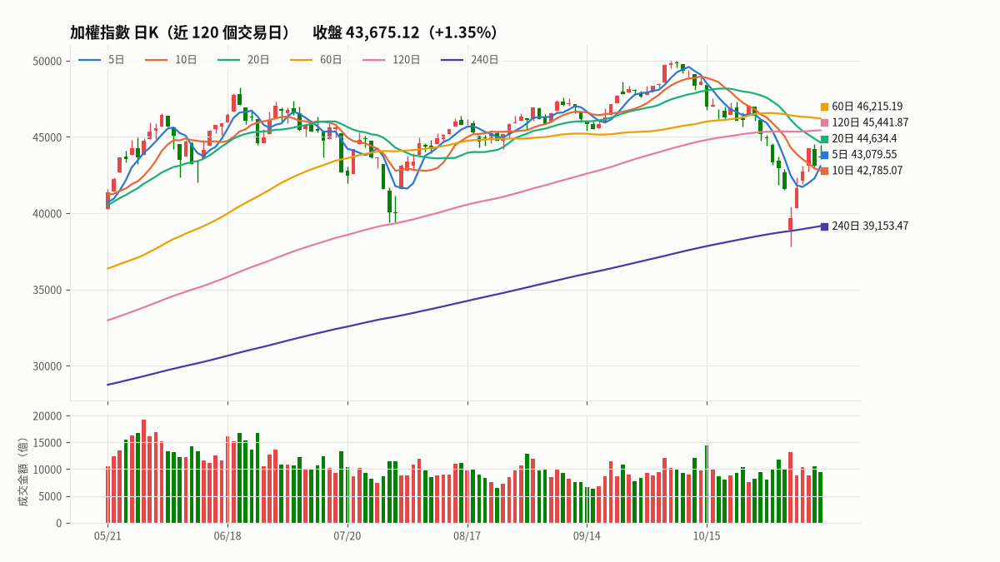
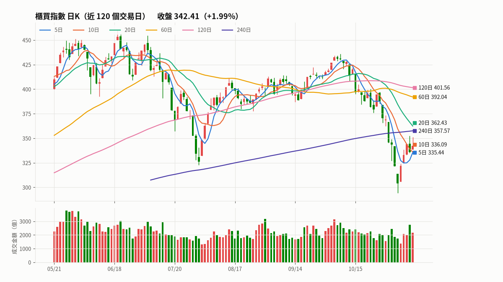
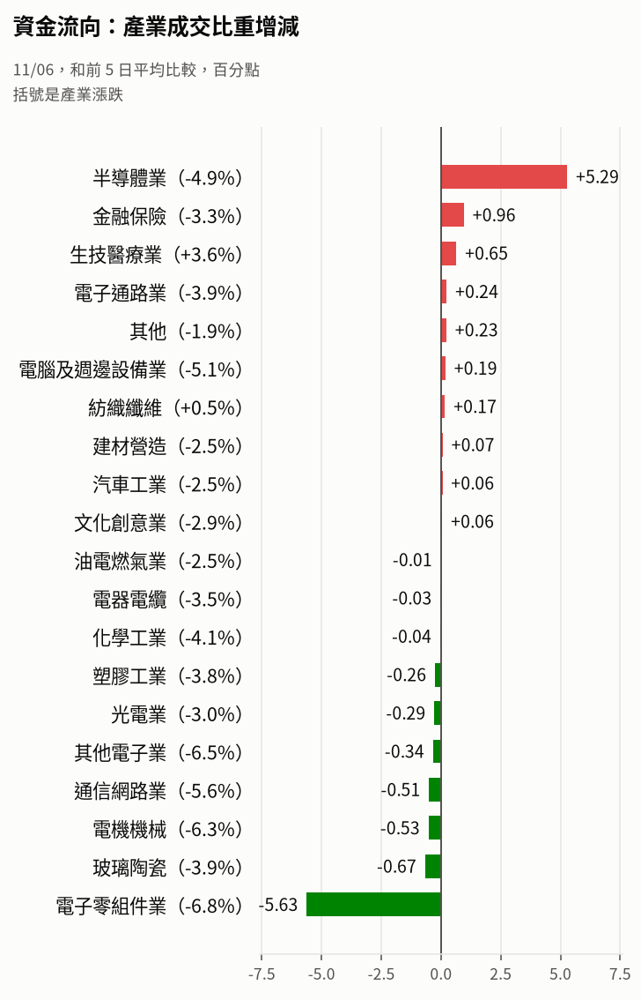
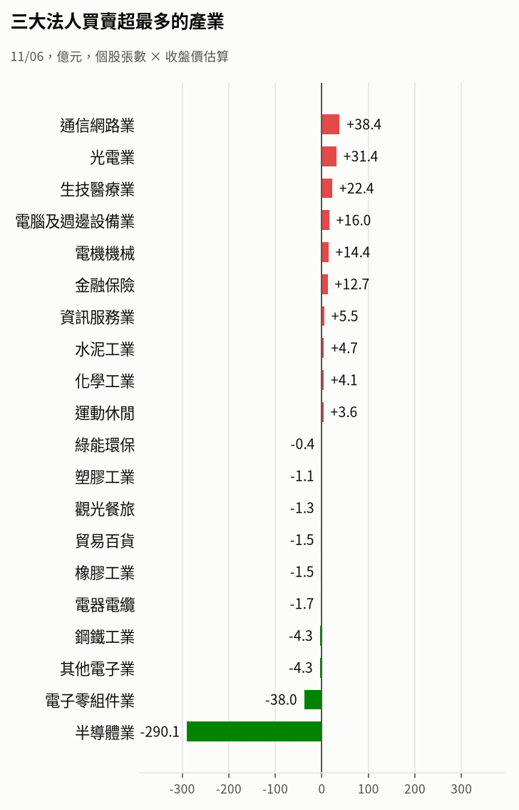

📈 盤勢解析 2026-11-13（五）
加權指數
43,675.12
+583.25（+1.35%）
櫃買指數
342.41
+6.68（+1.99%）
外資買賣超
+326.3 億
上市＋上櫃
三大法人
+477.3 億
上市＋上櫃
P/C 未平倉比
57.8%
前一天 66.7%
外資台指期
-100,870 口
比前一天 -1,297
資料日期：指數 11/13｜法人 11/13｜期交所 11/13｜產業 11/13
💤 今天（11/14）休市，以下是最近一個交易日的盤勢
今日盤勢
周五台股早盤開高，盤中一度上攻 44,489，但高檔賣壓湧現，終場留長上影線並且收十字線，上漲 583 點（+1.35%），價漲量平，短線轉為震盪，下檔留意5日均線 43,080 的支撐。
- 觀察周五台股盤面結構，電子股延續漲勢，塑膠、重電、油電燃氣等非電子股同步走揚，使得指數能夠開高走低終場收紅。塑膠類股周五上攻後轉強站上所有短期均線，佔權值的南亞、台塑、台化能夠適時接棒。重電類股中，佔權值的華城、東元、士電能夠適時接棒。
- 電子股走強，權值電子同步走揚，中華電創波段新高，下周一(11/16)台積電法說或具關鍵。櫃買市場最終收紅，PA、連接元件、IP、散熱表現強勢，強勢指標聯發科、創意、世芯-KY、穩懋、金像電、精材、奇鋐、大立光。高價股祥碩止跌回穩。欣興周四(11/12)法說後，周五開高走低下跌 0.9%，市場反應偏淡。南亞科周四(11/12)法說後，周五開高走低下跌 0.7%，市場反應偏淡。
重點數據
- 加權指數：43,675.12（+1.35%）；在 5、10、240 日線之上，20、60、120 日線之下；價漲量平；還沒到支撐：最近的支撐是 5日線（週線） 43,079.55（距離 1.4%）
- 櫃買指數：342.41（+1.99%）；在 5、10 日線之上，20、60、120、240 日線之下；價漲量平；站上 10日線（雙週線） 336.09（由壓力轉為支撐）
- 外資：現貨買超 326.3 億、台指期淨未平倉減少 1,297 口（現貨期貨方向不同）
- 選擇權 P/C 未平倉比 57.8%，前一天 66.7%
- 資金流入：玻璃陶瓷、光電業、電子零組件業；流出：半導體業、金融保險、塑膠工業
- 族群：強勢 PA +8.2%、連接元件 +6.8%、IP +6.5%；弱勢 無
- 融資融券：上市櫃融資餘額 7,086 億，增加 50.5 億；融券減少 589 張（11/13）
📅 重大事件
- 今天：鴻海法說會（09:00）；國巨*法說會（09:00）；聯亞法說會（09:00）；貿聯-KY法說會（14:30）；台燿法說會（10:00）；高力法說會（16:10）
- 接下來：11/16（一） 聯電法說會（09:00）；11/16（一） 鴻海法說會（09:00）；11/16（一） 國巨法說會（09:00）；11/16（一） 台積電法說會（09:00）；11/16（一） 欣興法說會（08:15）；11/16（一） 穩懋法說會（14:00）；11/16（一） 日月光投控法說會（10:00）；11/16（一） 信驊法說會（14:00）；11/16（一） 台燿法說會（14:00）；11/16（一） 力積電法說會（10:00）；11/16（一） 群聯法說會（14:00）；11/16（一） 金居法說會（08:00）；11/17（二） 友達法說會（10:00）；11/17（二） 緯創法說會（09:00）；11/17（二） 緯穎法說會（09:00）；11/18（三） 聯電法說會（10:30）；11/18（三） 台達電法說會（09:00）；11/18（三） 台積電法說會（08:30）；11/18（三） 京元電子法說會（09:30）；11/18（三） 奇鋐法說會（12:30）；11/18（三） 雙鴻法說會（14:30）；11/18（三） 群創法說會（10:30）；11/18（三） 臻鼎-KY法說會（08:30）；11/18（三） 信驊法說會（09:00）；11/19（四） 國巨法說會（15:00）；11/19（四） 玉晶光法說會（14:30）
加權指數 43,675.12 ▲583.25（+1.35%）

日K：十字線（多空拉鋸）、開高走低、長上影線（上檔有賣壓）（開 43,719.75｜高 44,489.48｜低 43,534.12｜收 43,675.12）
量能：成交金額 9,516 億，是前 5 日平均的 0.92 倍（量平）→ 價漲量平
均線位置：在 5、10、240 日線之上，20、60、120 日線之下｜均線交錯
漲跌家數：上漲 814｜下跌 202｜平盤 78（股票，不含 ETF）
關鍵支撐
- 還沒到支撐：最近的支撐是 5日線（週線） 43,079.55（距離 1.4%）
- 上方壓力：20日線（月線） 44,634.4（距離 2.1%）
| 均線 | 數值 | 收盤距離 | 均線方向 | 今天 |
|---|---|---|---|---|
| 5日線（週線） | 43,079.55 | +1.38% | ↗ 上揚 | 在上方（支撐） |
| 10日線（雙週線） | 42,785.07 | +2.08% | ↘ 下彎 | 在上方（支撐） |
| 20日線（月線） | 44,634.4 | -2.15% | ↘ 下彎 | 在下方（壓力） |
| 60日線（季線） | 46,215.19 | -5.50% | ↘ 下彎 | 在下方（壓力） |
| 120日線（半年線） | 45,441.87 | -3.89% | ↗ 上揚 | 在下方（壓力） |
| 240日線（年線） | 39,153.47 | +11.55% | ↗ 上揚 | 在上方（支撐） |
資料來源：證交所
櫃買指數 342.41 ▲6.68（+1.99%）

日K：長紅K、長上影線（上檔有賣壓）（開 338.33｜高 351.22｜低 338.33｜收 342.41）
量能：成交金額 2,177 億，是前 5 日平均的 1.10 倍（量平）→ 價漲量平
均線位置：在 5、10 日線之上，20、60、120、240 日線之下｜均線交錯
漲跌家數：上漲 578｜下跌 219｜平盤 59（股票，不含 ETF）
關鍵支撐
- 站上 10日線（雙週線） 336.09（由壓力轉為支撐）
- 還沒到支撐：最近的支撐是 10日線（雙週線） 336.09（距離 1.9%）
- 上方壓力：240日線（年線） 357.57（距離 4.2%）
| 均線 | 數值 | 收盤距離 | 均線方向 | 今天 |
|---|---|---|---|---|
| 5日線（週線） | 335.44 | +2.08% | ↗ 上揚 | 在上方（支撐） |
| 10日線（雙週線） | 336.09 | +1.88% | ↘ 下彎 | 站上（支撐） |
| 20日線（月線） | 362.43 | -5.52% | ↘ 下彎 | 在下方（壓力） |
| 60日線（季線） | 392.04 | -12.66% | ↘ 下彎 | 在下方（壓力） |
| 120日線（半年線） | 401.56 | -14.73% | ↘ 下彎 | 在下方（壓力） |
| 240日線（年線） | 357.57 | -4.24% | ↗ 上揚 | 在下方（壓力） |
資料來源：櫃買中心
三大法人買賣超（億元，11/13）
| 外資 | 投信 | 自營商 | 合計 | |
|---|---|---|---|---|
| 上市 | +288.4 | +82.4 | +68.9 | +439.7 |
| 上櫃 | +37.9 | -9.0 | +8.7 | +37.6 |
| 上市＋上櫃 | +326.3 | +73.4 | +77.6 | +477.3 |
上市外資連買 1 天；近 5 日上市外資合計 -967.9 億、三大法人 -361.5 億
期貨與選擇權（11/13）
| 台指期 | 淨未平倉（口） | 比前一天 |
|---|---|---|
| 外資 | -100,870 | -1,297 |
| 投信 | +99,923 | +1,022 |
| 自營商 | -2,771 | -2,584 |
| 三大法人 | -3,718 | -2,859 |
- P/C 未平倉比 57.8%，前一天 66.7%，5 日平均 61.5%；成交量比 98.7%
- 外資買權淨未平倉 +3,720 口（比前一天 -311），金額 +1.58 億
- 外資賣權淨未平倉 +5,603 口（比前一天 +1,861），金額 +1.55 億
- 買權最大未平倉（11 月合約）：47,500，7,867 口（上檔壓力參考）
- 賣權最大未平倉（11 月合約）：40,000，2,880 口（下檔支撐參考）
族群漲跌（11/13，市值加權）
| 族群 | 今天 | 近5日 | 近20日 | 成交值（倍） | 權值最大 | 檔數 |
|---|---|---|---|---|---|---|
| PA | +8.16% | +34.4% | -6.2% | 1.14 | 穩懋、全新、宏捷科 | 3 |
| 連接元件 | +6.78% | +18.6% | -9.9% | 1.15 | 嘉澤、嘉基、佳必琪 | 6 |
| IP | +6.52% | +26.0% | -6.1% | 1.04 | 創意、信驊、瑞昱 | 7 |
| 散熱 | +3.22% | +18.9% | -14.5% | 1.11 | 奇鋐、健策、富世達 | 5 |
| 網通 | +3.11% | +27.0% | -14.2% | 1.65 | 華通、昇達科、啟碁 | 6 |
| 重電 | +2.86% | +8.2% | -16.6% | 0.83 | 華城、東元、士電 | 7 |
| 封測 | +2.26% | +14.1% | -20.9% | 1.02 | 日月光投控、京元電子、精材 | 8 |
| 軍工 | +2.22% | +10.1% | -7.7% | 1.92 | 長榮航太、漢翔、原相 | 12 |
| copos | +2.16% | +16.5% | -21.6% | 0.75 | 盟立、均華、東捷 | 9 |
| PCB、ABF、CCL | +2.15% | +17.6% | -21.9% | 1.09 | 南亞、台光電、欣興 | 24 |
| 工業電腦 | +2.14% | +4.1% | -15.6% | 0.67 | 樺漢、研揚、融程電 | 6 |
| 光通 | +1.88% | +18.4% | -25.2% | 1.15 | 智邦、大立光、貿聯-KY | 16 |
| 設備 | +1.85% | +11.5% | -23.6% | 0.78 | 漢唐、中砂、萬潤 | 15 |
| 矽晶圓 | +1.47% | +19.7% | -33.1% | 0.65 | 環球晶、台勝科、中美晶 | 6 |
| 被動元件 | +1.32% | +10.4% | -33.7% | 0.89 | 國巨*、禾伸堂、晶技 | 12 |
| edgeai | +0.90% | +9.5% | -15.3% | 0.54 | 研華、飛捷、高技 | 6 |
| 機器人 | +0.76% | +10.4% | -10.1% | 0.88 | 上銀、亞光、台灣精銳 | 19 |
| BBU | +0.28% | +17.1% | -28.7% | 0.75 | 台達電、光寶科、AES-KY | 8 |
| 記憶體 | +0.07% | +7.9% | -20.7% | 0.77 | 南亞科、華邦電、群聯 | 12 |
| 觀察名單 | -0.43% | -2.3% | -7.8% | 1.58 | 合騏* | 1 |
成交值（倍）＝族群今天成交值 ÷ 前 5 日平均；族群名單在 config.yaml「族群」
資金流向：產業成交比重（11/13，和前 5 日平均比較）

流入
| 產業 | 成交比重 | 比重增減 | 族群漲跌 | 成交值（億） | 法人買賣超（億） | 成交值最大 |
|---|---|---|---|---|---|---|
| 玻璃陶瓷 | 3.5% | +2.1 | +4.2% | 376 | -5.5 | 台玻、中釉 |
| 光電業 | 6.4% | +0.9 | +1.8% | 681 | +4.4 | 大立光、友達 |
| 電子零組件業 | 26.0% | +0.7 | +1.3% | 2,785 | +28.3 | 欣興、富喬 |
| 通信網路業 | 4.1% | +0.7 | +1.4% | 443 | -6.4 | 聯亞、智邦 |
| 電腦及週邊設備業 | 6.4% | +0.7 | +2.2% | 688 | +26.8 | 奇鋐、緯穎 |
流出
| 產業 | 成交比重 | 比重增減 | 族群漲跌 | 成交值（億） | 法人買賣超（億） | 成交值最大 |
|---|---|---|---|---|---|---|
| 半導體業 | 34.5% | -4.4 | +3.8% | 3,695 | +278.3 | 台積電、聯發科 |
| 金融保險 | 2.3% | -0.3 | +2.4% | 250 | +71.7 | 中信金、富邦金 |
| 塑膠工業 | 3.4% | -0.3 | +3.8% | 364 | +22.3 | 南亞、台化 |
| 電子通路業 | 0.4% | -0.2 | +0.9% | 42 | -1.9 | 大聯大、文曄 |
| 生技醫療業 | 1.0% | -0.2 | +1.2% | 105 | +7.0 | 藥華藥、美時 |
法人買賣超最多的產業

| 買超 | 億 | 賣超 | 億 |
|---|---|---|---|
| 半導體業 | +278.3 | 鋼鐵工業 | -26.9 |
| 金融保險 | +71.7 | 通信網路業 | -6.4 |
| 電子零組件業 | +28.3 | 電機機械 | -6.0 |
| 電腦及週邊設備業 | +26.8 | 玻璃陶瓷 | -5.5 |
| 塑膠工業 | +22.3 | 電器電纜 | -3.1 |
全部產業
| 產業 | 成交比重 | 比重增減 | 族群漲跌 | 成交值（億） | 法人買賣超（億） | 成交值最大 |
|---|---|---|---|---|---|---|
| 玻璃陶瓷 | 3.5% | +2.1 | +4.2% | 376 | -5.5 | 台玻、中釉 |
| 光電業 | 6.4% | +0.9 | +1.8% | 681 | +4.4 | 大立光、友達 |
| 電子零組件業 | 26.0% | +0.7 | +1.3% | 2,785 | +28.3 | 欣興、富喬 |
| 通信網路業 | 4.1% | +0.7 | +1.4% | 443 | -6.4 | 聯亞、智邦 |
| 電腦及週邊設備業 | 6.4% | +0.7 | +2.2% | 688 | +26.8 | 奇鋐、緯穎 |
| 電機機械 | 2.7% | +0.4 | -1.4% | 288 | -6.0 | 大量、高力 |
| 資訊服務業 | 1.2% | +0.3 | +6.5% | 127 | +3.9 | 華經、資通 |
| 鋼鐵工業 | 0.5% | +0.2 | -5.4% | 53 | -26.9 | 大成鋼、中鋼 |
| 化學工業 | 0.5% | +0.1 | +1.5% | 55 | -2.9 | 和益、德淵 |
| 數位雲端 | 0.2% | +0.1 | +7.7% | 24 | +5.5 | 伊雲谷、中華資安 |
| 紡織纖維 | 0.3% | +0.1 | +4.2% | 31 | +8.9 | 儒鴻、聚陽 |
| 造紙工業 | 0.0% | +0.0 | -7.2% | 3 | -1.3 | 正隆、華紙 |
| 文化創意業 | 0.1% | +0.0 | +4.6% | 13 | +7.2 | 鈊象、宇峻 |
| 綠能環保 | 0.2% | +0.0 | -6.3% | 21 | +1.4 | 聯友金屬-創、兆聯實業 |
| 農業科技業 | 0.0% | +0.0 | +0.5% | 0 | +0.0 | 瑞基、惠光 |
| 存託憑證 | 0.0% | -0.0 | +2.3% | 1 | +0.2 | 泰金寶-DR、巨騰-DR |
| 居家生活 | 0.1% | -0.0 | +2.4% | 5 | +1.8 | 寶雅*、億豐 |
| 橡膠工業 | 0.0% | -0.0 | +0.3% | 5 | -0.5 | 正新、台橡 |
| 觀光餐旅 | 0.0% | -0.0 | +1.9% | 3 | +0.8 | 王品、瓦城 |
| 水泥工業 | 0.1% | -0.0 | +0.1% | 10 | -2.4 | 台泥、亞泥 |
| 貿易百貨 | 0.0% | -0.0 | +1.0% | 4 | +0.0 | 統一超、潤泰全 |
| 電器電纜 | 0.1% | -0.0 | +0.5% | 10 | -3.1 | 華新、風青 |
| 建材營造 | 0.1% | -0.0 | +1.3% | 13 | +2.6 | 興富發、皇昌 |
| 汽車工業 | 0.1% | -0.0 | +0.9% | 15 | +2.6 | 巨鎧精密-創、東陽 |
| 食品工業 | 0.1% | -0.0 | +0.6% | 14 | +3.2 | 統一、大成 |
| 運動休閒 | 0.1% | -0.0 | +2.4% | 9 | +2.2 | 寶成、復盛應用 |
| 其他 | 0.7% | -0.1 | +2.8% | 74 | +6.6 | 天品、中租-KY |
| 油電燃氣業 | 0.1% | -0.1 | +2.5% | 14 | +2.8 | 台塑化、台汽電 |
| 其他電子業 | 3.8% | -0.2 | +0.3% | 404 | +10.7 | 鴻海、雙鴻 |
| 航運業 | 0.8% | -0.2 | +2.2% | 86 | +15.7 | 長榮、長榮航 |
| 生技醫療業 | 1.0% | -0.2 | +1.2% | 105 | +7.0 | 藥華藥、美時 |
| 電子通路業 | 0.4% | -0.2 | +0.9% | 42 | -1.9 | 大聯大、文曄 |
| 塑膠工業 | 3.4% | -0.3 | +3.8% | 364 | +22.3 | 南亞、台化 |
| 金融保險 | 2.3% | -0.3 | +2.4% | 250 | +71.7 | 中信金、富邦金 |
| 半導體業 | 34.5% | -4.4 | +3.8% | 3,695 | +278.3 | 台積電、聯發科 |
怎麼判斷的（定義與限制）
- 支撐／壓力：均線在收盤價下方是支撐、上方是壓力。均線：5、10、20、60、120、240 日。
- 到關鍵支撐：盤中最低價碰到均線、收盤守在均線之上（回測有撐），或收盤在均線上方 1.0% 以內（接近支撐）。前一天收在均線之上、今天收在均線之下是「跌破」。
- 日K：實體（收盤與開盤的差）≥ 前一天收盤的 1.0% 是長紅／長黑，一半以上是中紅／中黑；實體小於當天高低差的 10% 是十字線；影線超過當天高低差一半、而且夠長才算長上／下影線。
- 量能：成交金額和前 5 日平均比較，1.2 倍以上是量增、0.8 倍以下是量縮。上市用證交所公布的成交金額，上櫃用個股成交金額加總（含 ETF）。
- 資金流向：各產業成交值占全部股票（不含 ETF）成交值的比重，和前 5 日平均比較；族群漲跌依成交值加權；產業的法人買賣超是個股三大法人買賣超張數 × 收盤價估算，和官方金額會有些差異。
- P/C 比：臺指選擇權賣權未平倉 ÷ 買權未平倉。常見解讀是高於 100% 代表下檔賣權（支撐）較多，但解讀方式不只一種，請和其他指標一起看。最大未平倉履約價只是籌碼集中的價位，不保證有撐有壓。
- 今日盤勢（文章）：依當天數據套用固定句型產生，不是人工撰寫；新聞原因（美股、政策、產業消息）資料裡看不到，所以不會寫。類股與族群漲跌是成分股依市值加權計算；族群用 config「族群」，沒填時用官方產業分類。「逢回仍可留意」「或有機會再戰」這類用語是仿照使用者提供的範例，只是描述，不是買賣訊號。
- 關鍵價位：近 10 個交易日內最近一根帶量長紅（實體達長K門檻、成交金額達量增倍數）的低點，以及 5～60 個交易日前、之後被突破的波段高點（型態高點）；只提收盤下方 5% 以內的價位。
- 均線支撐是很多人觀察的價位，不代表一定守得住；以上都是盤後依固定規則整理，不是投資建議。
※ 依固定規則整理的盤後資料，不是投資建議；均線支撐、P/C 比都只是參考價位與指標